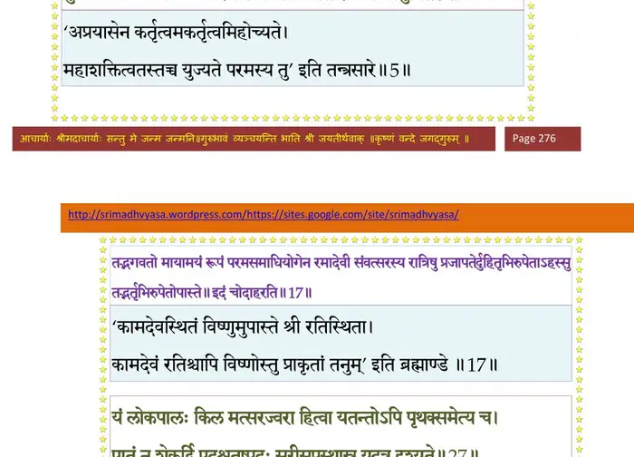
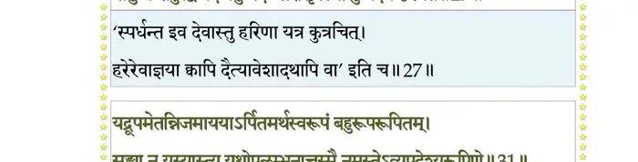
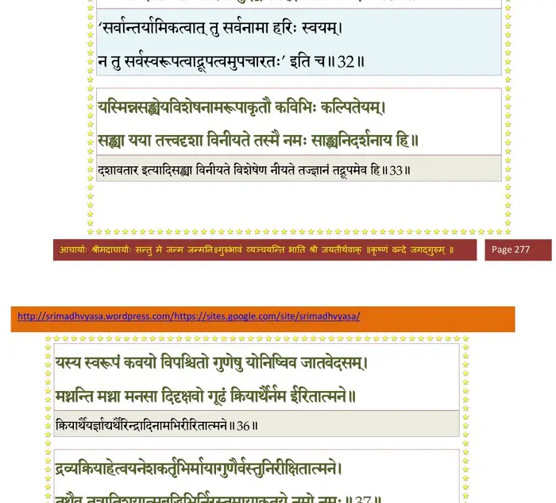
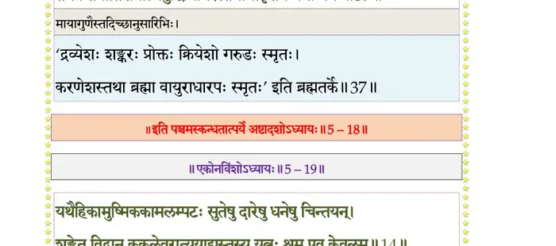

स्कन्ध 5 · अध्याय 18
श्लोक १
श्री शुक उवाच–
तथा च भद्रश्रवा नाम धर्मसुतस्तत्कुलपतयः पुरुषा भद्राश्वे वर्षे साक्षा-द्भगवतो वासुदेवस्य प्रियां तनुं धर्ममयीं हयशीर्षाभिधानां परमेण समाधिना सन्निधाप्येदमभिगृणन्त उपधावन्ति ।। १ ।।
तथा च भद्रश्रवा नाम धर्मसुतस्तत्कुलपतयः पुरुषा भद्राश्वे वर्षे साक्षा-द्भगवतो वासुदेवस्य प्रियां तनुं धर्ममयीं हयशीर्षाभिधानां परमेण समाधिना सन्निधाप्येदमभिगृणन्त उपधावन्ति ।। १ ।।
श्लोक २
भद्रश्रवस ऊचुः–
ॐ नमो भगवते धर्मायात्मशोधनाय नम इति।। २ ।।
ॐ नमो भगवते धर्मायात्मशोधनाय नम इति।। २ ।।
श्लोक ५
अहो विचित्रं भगवद्विचेष्टितं घ्नन्तं जनोऽयं हि मिषन्न पश्यति ।
ध्यायन्नसद्यर्हि विकर्म सेवते निर्हृत्य पुत्रः पितरं जिजीविषुः।। ३
वदन्ति विश्वं कवयश्च नश्वरं पश्यन्ति चाध्यात्मविदो विपश्चितः ।
तथाऽपि मुह्यन्ति तवाज मायया सुविस्मयं कृत्यमिदं नताः स्म तम् ।। ५ ।।
ध्यायन्नसद्यर्हि विकर्म सेवते निर्हृत्य पुत्रः पितरं जिजीविषुः।। ३
वदन्ति विश्वं कवयश्च नश्वरं पश्यन्ति चाध्यात्मविदो विपश्चितः ।
तथाऽपि मुह्यन्ति तवाज मायया सुविस्मयं कृत्यमिदं नताः स्म तम् ।। ५ ।।
भागवततात्पर्यनिर्णय

श्लोक ६
विश्वोद्भवस्थाननिरोधकर्म ते ह्यकर्तुरङ्गीकृतमप्यपावृतम् ।
युक्तं न चित्रं त्वयि कार्यकारणे सर्वात्मनि व्यतिरिक्ते च वस्तुनि।। ६ ।।
युक्तं न चित्रं त्वयि कार्यकारणे सर्वात्मनि व्यतिरिक्ते च वस्तुनि।। ६ ।।
श्लोक ७
वेदान्युगान्ते तमसा तिरस्कृतान्रसातलाद्यो नृतुरङ्गविग्रहः ।
प्रत्याददे वै कवयेऽभियाचते तस्मै नमस्तेऽवितथे हिताय ते।। ६
हरिवर्षे च भगवान्नरहरिरूपेणाऽस्ते तद्रूपग्रहणनिमित्तमुत्तर-त्राभिधास्यामः तद्दयितं रूपं महापुरुषगुणभाजनो महाभागवतो दैत्यदानवकुलतीर्थीकरणशीलचरितः प्रल्हादोऽव्यवधानानन्य-भक्तियोगेन सह तद्वर्षपुरुषैरुपास्ते इदं चोदाहरति।। ७ ।।
प्रत्याददे वै कवयेऽभियाचते तस्मै नमस्तेऽवितथे हिताय ते।। ६
हरिवर्षे च भगवान्नरहरिरूपेणाऽस्ते तद्रूपग्रहणनिमित्तमुत्तर-त्राभिधास्यामः तद्दयितं रूपं महापुरुषगुणभाजनो महाभागवतो दैत्यदानवकुलतीर्थीकरणशीलचरितः प्रल्हादोऽव्यवधानानन्य-भक्तियोगेन सह तद्वर्षपुरुषैरुपास्ते इदं चोदाहरति।। ७ ।।
श्लोक ८
ॐ नमो नृसिंहाय तेजस्तेजसे आविराविर्भव वज्रनख वज्रदंष्ट्र कर्माशयान् । रन्धय रन्धय तमो ग्रस स्वाहा अभयमभयमात्मने भूयिष्ठात् ।। ८ ।।
श्लोक ९
स्वस्त्यस्तु विश्वस्य खलः प्रसीदतां ध्यायन्तु भद्राणि शिवं मनो धिया ।
मनश्च भद्रं भजतादधोक्षजे आविश्यतां नो मतिरप्यहैतुकी।। ९ ।।
मनश्च भद्रं भजतादधोक्षजे आविश्यतां नो मतिरप्यहैतुकी।। ९ ।।
श्लोक १०
माऽऽगारदारात्मजदेहबन्धुषु सङ्गो यदि स्याद्भगवत्प्रियेषु नः ।
यः प्राणवृत्त्या परितुष्ट आत्मवान् सिद्धत्यदूरान्न तथेन्द्रियप्रियः ।।१०।।
यः प्राणवृत्त्या परितुष्ट आत्मवान् सिद्धत्यदूरान्न तथेन्द्रियप्रियः ।।१०।।
श्लोक ११
यत्संगलब्धं निजवीर्यवैभवं तीर्थं मुहुः संस्पृशतां हि मानसम् ।
हरत्यजोंऽहः श्रुतिभिर्गतोऽन्तः को वै न सेवेत मुकुन्दविक्रमम्।। ११ ।।
हरत्यजोंऽहः श्रुतिभिर्गतोऽन्तः को वै न सेवेत मुकुन्दविक्रमम्।। ११ ।।
श्लोक १२
यस्यास्ति भक्तिर्भगवत्यकिञ्चनाः सर्वैर्गुणैस्तत्र समासते सुराः ।
हरावभक्तस्य कुतो महद्गुणा मनोरथेनासति धावतो बहिः।। १२ ।।
हरावभक्तस्य कुतो महद्गुणा मनोरथेनासति धावतो बहिः।। १२ ।।
श्लोक १३
हरिर्हि साक्षाद्भगवाञ्च्छरीरिणामात्मा झषाणामिव तोयमीप्सितः ।
हित्वा महान्तं यदि सज्जते गृहे तदा महत्त्वं वयसा दम्पतीनाम् ।।१३।।
हित्वा महान्तं यदि सज्जते गृहे तदा महत्त्वं वयसा दम्पतीनाम् ।।१३।।
श्लोक १४
तस्माद्रजोरागविषादमन्युमानस्पृहाभयदैन्याधिमूलम् ।
हित्वा गृहं संसृतिचक्रवालं नृसिंहपादं भजतां कुतोभयमिति ।।१४।।
हित्वा गृहं संसृतिचक्रवालं नृसिंहपादं भजतां कुतोभयमिति ।।१४।।
श्लोक १५
केतुमाले भगवान्कामदेवस्वरूपेणास्ते लक्ष्म्याः प्रियचिकीर्षया प्रजापते-र्दुहितॄणां च तद्वर्षपतीनां पुरुषायुषाऽहोरात्रपरिसङ्ख्यानानां यासां गर्भा महापुरुषमहास्त्रतेजसोद्वेजितमनसां विध्वस्ता व्यसवः संवत्सरान्ते निपतन्ति ।। १५ ।।
श्लोक १६
अतीव सुललितगतिविलासविलसितरुचिरहासलेशावलोकलीलया किञ्चि-दुत्तम्भितसुन्दरभ्रूमण्डलसुभगवदनारविन्दश्रिया रमां रमयन्निन्द्रियाणि रमयते ।। १६ ।।
श्लोक १७
तद्भगवतो मायामयं रूपं परमसमाधियोगेन रमादेवी संवत्सरस्य रात्रिषु प्रजापतेर्दुहितृभिरुपेताहस्सु तद्भर्तृभिरुपेतोपास्ते । इदं चोदाहरति ।।१७।।
श्लोक १८
ॐ ह्रां ह्रीं ह्रूं ॐ नमो भगवते हृषीकेशाय सर्वविशेषवित्-क्षेत्रात्मने आकूतीनां चित्तानां चेतसां विशेषाणां चाधिपतये षोडशकलाय छन्दोमयायान्नमयायामृतमयाय सर्वमयाय महसे ओजसे बलाय कान्ताय कामाय नमस्ते उभयत्र भूयात् ।। १८ ।।
श्लोक १९
स्त्रियो व्रतैस्त्वां हृषीकेश्वरं स्वतो ह्याराध्य लोके पतिमाशासतेऽन्यम् ।
तासां न ते वै परिपास्यपत्यं प्रियं धनायूंषि यतोऽस्वतन्त्राः ।।१९।।
तासां न ते वै परिपास्यपत्यं प्रियं धनायूंषि यतोऽस्वतन्त्राः ।।१९।।
श्लोक २०
स वै पतिः स्यादकुतोभयः स्वयं समन्ततः पाति भयातुरं जनम् ।
स एक एवेतरथा मिथो भयं (भजन्) नैवात्मलाभादधि मन्यते परम् ।। २० ।।
स एक एवेतरथा मिथो भयं (भजन्) नैवात्मलाभादधि मन्यते परम् ।। २० ।।
श्लोक २१
यस्तस्य ते पादसरोरुहार्हणं निकामयेत्सोऽखिलकामलम्पटः ।
तदेव चाभीप्सितमीप्सितार्चनं यद्भग्नयाञ्चो भगवन् प्रतप्यते।। २१ ।।
तदेव चाभीप्सितमीप्सितार्चनं यद्भग्नयाञ्चो भगवन् प्रतप्यते।। २१ ।।
श्लोक २४
मत्प्राप्तये ये ससुरासुरादयस्तप्यन्त उग्रं तप ऐन्द्रिये धियः ।
ऋते भवत्पादपरायणं न मां विन्दन्त्यहं त्वद्हृदया यतोऽजित ।।२२
स त्वं ममापि कुरु शीर्षणि स्वकं कराम्बुजं यत्तदधायि सात्वताम् ।
बिभर्षि मा लक्ष्म वरेण्य मायया क ईश्वरस्येहितमूहितुं विभुः ।। इति ।
रम्यके च भगवतः प्रियतमं मात्स्यमवताररूपं तद्वर्षपुरुषस्य मनोः प्राक् प्रदर्शितं स इदानीमपि महता भक्तियोगेनाराधयन्निदं चोदाहरति ।।२४।।
ऋते भवत्पादपरायणं न मां विन्दन्त्यहं त्वद्हृदया यतोऽजित ।।२२
स त्वं ममापि कुरु शीर्षणि स्वकं कराम्बुजं यत्तदधायि सात्वताम् ।
बिभर्षि मा लक्ष्म वरेण्य मायया क ईश्वरस्येहितमूहितुं विभुः ।। इति ।
रम्यके च भगवतः प्रियतमं मात्स्यमवताररूपं तद्वर्षपुरुषस्य मनोः प्राक् प्रदर्शितं स इदानीमपि महता भक्तियोगेनाराधयन्निदं चोदाहरति ।।२४।।
श्लोक २५
ॐ नमो भगवते मुख्यतमाय नमः सत्वाय प्राणायौजसे सहसे बलाय महामत्स्याय नम इति ।। २५ ।।
श्लोक २७
अन्तर्बहिश्चाखिललोकपालकैरदृष्टरूपो विचरस्युरुस्वनः ।
स ईश्वरस्त्वं य इदं वशेऽनयन्नात्मा यथा दारुमयीं नरः स्त्रियम् ।। २६
यं लोकपालाः किल मत्सरज्वरा हित्वा यतन्तोऽपि पृथक्समेत्य च ।
पातुं न शेकुर्द्विपदश्चतुष्पदः सरीसृपास्थास्नु यदत्र दृश्यते।। २७ ।।
स ईश्वरस्त्वं य इदं वशेऽनयन्नात्मा यथा दारुमयीं नरः स्त्रियम् ।। २६
यं लोकपालाः किल मत्सरज्वरा हित्वा यतन्तोऽपि पृथक्समेत्य च ।
पातुं न शेकुर्द्विपदश्चतुष्पदः सरीसृपास्थास्नु यदत्र दृश्यते।। २७ ।।
भागवततात्पर्यनिर्णय

श्लोक २८
भवान्युगान्तार्णव ऊर्मिमालिनि क्षोणीमिमामोषधिविरुधां निधिम् ।
मया सहोरुक्रम ऊह ओजसा तस्मै जगत्प्राणगुणात्मने नमः इति।। २८ ।।
मया सहोरुक्रम ऊह ओजसा तस्मै जगत्प्राणगुणात्मने नमः इति।। २८ ।।
श्लोक २९
हिरण्मये भगवान्निवसति कूर्मतनुं बिभ्राणस्तस्य प्रियतमां तनुमर्यमा सह तद्वर्षपुरुषैः पितृगणाधिपतिरुपधावति मन्त्रमिमं चानुजपति ।। २९ ।।
श्लोक ३०
ॐ नमो भगवते अकूपाराय सर्वसत्वगुणविशेषणाय नोपलक्षितस्थानाय नमोऽवर्ष्मणे नमो भूयसे नमोऽवस्थानाय नमस्ते ।। ३० ।।
श्लोक ३२
यद्रूपमेतन्निजमाययाऽर्पितमर्थस्वरूपं बहुरूपरूपितम् ।
सङ्ख्या न यस्यास्त्ययथोपलम्भनात्तस्मै नमस्तेऽव्यपदेशरूपिणे ।।३१
जरायुजं स्वेदजमण्डजोद्भिजं चराचरं देवर्षिपितृभूतभेदम् ।
द्यौः खं क्षितिः शैलसरित्समुद्रद्वीपग्रहर्क्षेत्यभिधेय एकः।। ३२ ।।
सङ्ख्या न यस्यास्त्ययथोपलम्भनात्तस्मै नमस्तेऽव्यपदेशरूपिणे ।।३१
जरायुजं स्वेदजमण्डजोद्भिजं चराचरं देवर्षिपितृभूतभेदम् ।
द्यौः खं क्षितिः शैलसरित्समुद्रद्वीपग्रहर्क्षेत्यभिधेय एकः।। ३२ ।।
भागवततात्पर्यनिर्णय

श्लोक ३३
यस्मिन्नसंख्येयविशेषनामरूपाकृतौ कविभिः कल्पितेयम् ।
सङ्ख्या यया तत्त्वदृशा विनीयते तस्मै नमः साङ्ख्यनिदर्शनाय हि इति ।। ३३ ।।
सङ्ख्या यया तत्त्वदृशा विनीयते तस्मै नमः साङ्ख्यनिदर्शनाय हि इति ।। ३३ ।।
श्लोक ३४
उत्तरेषु कुरुषु भगवान्यज्ञपुरुषः कृतवराहरूप आस्ते । तं तु देवी हैषा भूः सहकुरुभिरस्खलितभक्तियोगेनोपधावति । इमां च परमामुपनिषद-मावर्तयति ।। ३४ ।।
श्लोक ३५
ॐ नमो भगवते मन्त्रतत्त्वलिङ्गाय यज्ञक्रतवे महीधराय महापुरुषाय नमः कर्मशुक्लाय त्रियुगाय नमस्ते ।। ३५ ।।
श्लोक ३६
यस्य स्वरूपं कवयो विपश्चितो गुणेषु योनिष्विव जातवेदसम् ।
मथ्नन्ति मथ्ना मनसा दिदृक्षवो गूढं क्रियार्थैर्नम ईरितात्मने।।३६।।
मथ्नन्ति मथ्ना मनसा दिदृक्षवो गूढं क्रियार्थैर्नम ईरितात्मने।।३६।।
श्लोक ३७
द्रव्यक्रियाहेत्वयनेशकर्तृभिर्मायागुणैर्वस्तुनिरीक्षितात्मने ।
तथैव तत्रातिशयात्मबुद्धिभिर्निरस्तमायाकृतये नमो नमः।। ३७ ।।
तथैव तत्रातिशयात्मबुद्धिभिर्निरस्तमायाकृतये नमो नमः।। ३७ ।।
भागवततात्पर्यनिर्णय

श्लोक ३८
करोति विश्वस्थितिसंयमोदयं यथेप्सितं नेक्षितुमीश ते गुणैः ।
माया यथाऽयो भ्रमते यदाश्रया ग्राव्णो नमस्ते गुणकर्मसाक्षिणे।। ३८ ।।
माया यथाऽयो भ्रमते यदाश्रया ग्राव्णो नमस्ते गुणकर्मसाक्षिणे।। ३८ ।।
श्लोक ३९
प्रमथ्य दैत्यं प्रतिवारणं मृधे यो मां रसाया जगदादिसूकरः ।
कृत्वाऽग्रदंष्ट्रे निरगादुदन्वतः क्रीडन्निवेभः प्रणताऽस्मि तं विभुम् ।।३९।।
कृत्वाऽग्रदंष्ट्रे निरगादुदन्वतः क्रीडन्निवेभः प्रणताऽस्मि तं विभुम् ।।३९।।
।। इति श्रीमद्भागवते पञ्चमस्कन्धे अष्टादशोऽध्यायः ।।